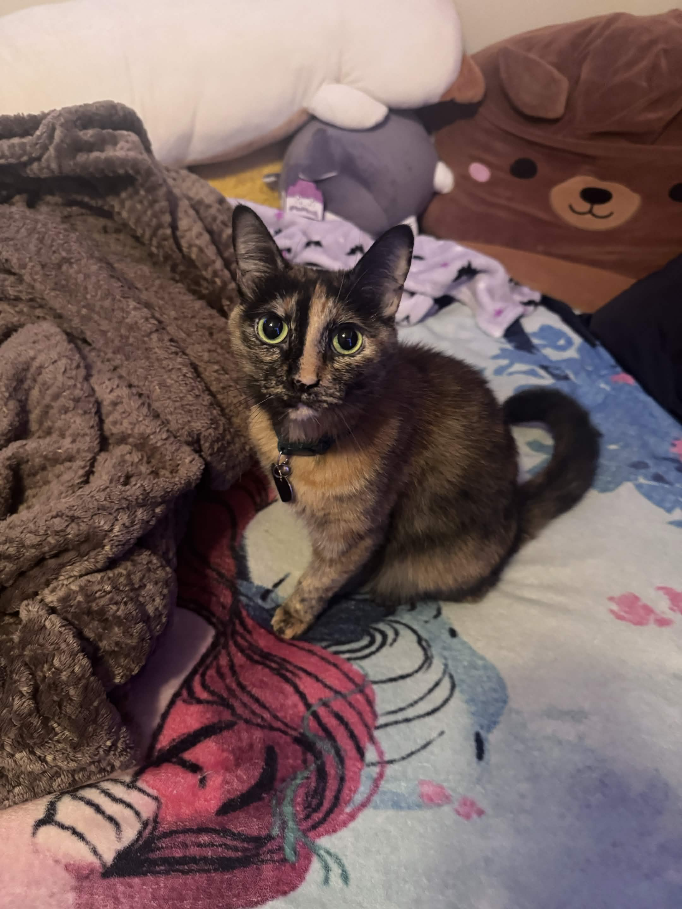

Bean is a five-year-old tortoiseshell cat. My grandpa found her in December 2020 as a stray kitten while on a walk. Bean is a friendly, agile, chatty cathy who is skeptical of strangers at first but comes around quickly. She loves getting pets behind her ears, with the occasional belly rub if she really likes you; she will often lie on others and try to get close to their face to hopefully smell your head. Her favorite scent. Although she is the oldest, she is also the smallest and has the biggest heart of the three.
Her intrests consists of staring, boxes and exploring.
Specialty: Loafing